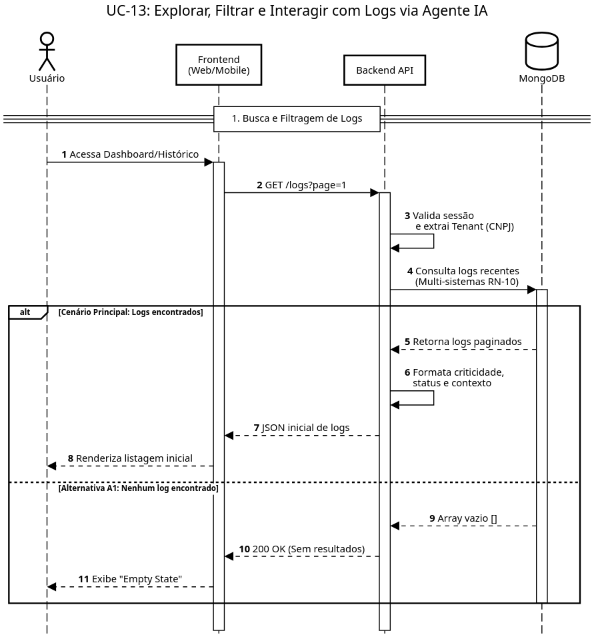
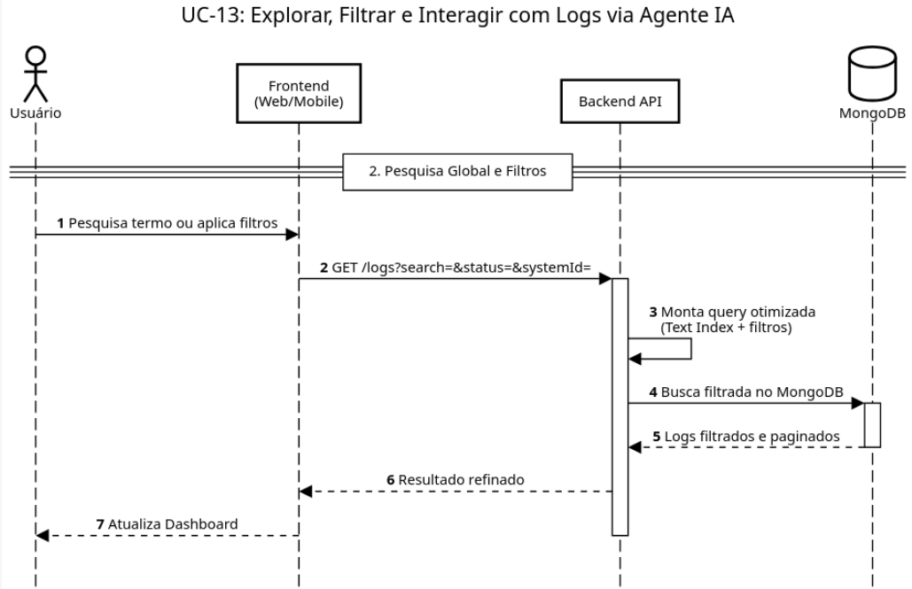
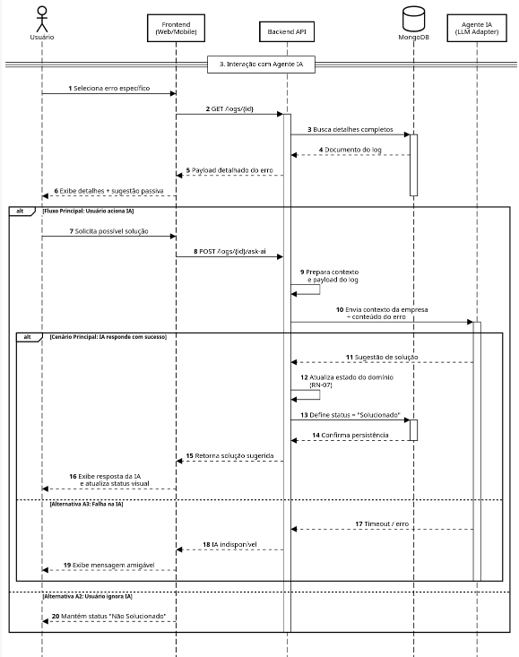

Minha equipe de software : Diagrama de Sequência 13 - Explorar, Filtrar e Interagir com Logs via Agente IA
Created by Michel Bocchi Junior, last modified on mai. 18, 2026

@startuml
!theme plain
autonumber
skinparam maxMessageSize 180
skinparam sequence {
ParticipantBackgroundColor #EBF8FF
ParticipantBorderColor #005A9C
ActorBorderColor #005A9C
DatabaseBackgroundColor #EBF8FF
DatabaseBorderColor #005A9C
}
title UC-13: Explorar, Filtrar e Interagir com Logs via Agente IA
actor "Usuário" as User
participant "Frontend\n(Web/Mobile)" as UI
participant "Backend API" as API
database "MongoDB" as DB
== 1. Busca e Filtragem de Logs ==
User -> UI: Acessa Dashboard/Histórico
activate UI
UI -> API: GET /logs?page=1
activate API
API -> API: Valida sessão\n e extrai Tenant (CNPJ)
API -> DB: Consulta logs recentes\n(Multi-sistemas RN-10)
activate DB
alt Cenário Principal: Logs encontrados
DB --> API: Retorna logs paginados
API -> API: Formata criticidade,\nstatus e contexto
API --> UI: JSON inicial de logs
UI --> User: Renderiza listagem inicial
else Alternativa A1: Nenhum log encontrado
DB --> API: Array vazio []
API --> UI: 200 OK (Sem resultados)
UI --> User: Exibe "Empty State"
end
deactivate DB
@Endum

@startuml
!theme plain
autonumber
skinparam maxMessageSize 180
skinparam sequence {
ParticipantBackgroundColor #EBF8FF
ParticipantBorderColor #005A9C
ActorBorderColor #005A9C
DatabaseBackgroundColor #EBF8FF
DatabaseBorderColor #005A9C
}
title UC-13: Explorar, Filtrar e Interagir com Logs via Agente IA
actor "Usuário" as User
participant "Frontend\n(Web/Mobile)" as UI
participant "Backend API" as API
database "MongoDB" as DB
== 2. Pesquisa Global e Filtros ==
User -> UI: Pesquisa termo ou aplica filtros
UI -> API: GET /logs?search=&status=&systemId=
activate API
API -> API: Monta query otimizada\n(Text Index + filtros)
API -> DB: Busca filtrada no MongoDB
activate DB
DB --> API: Logs filtrados e paginados
deactivate DB
API --> UI: Resultado refinado
UI --> User: Atualiza Dashboard
deactivate API
@Enduml

@startuml
!theme plain
autonumber
skinparam maxMessageSize 180
skinparam sequence {
ParticipantBackgroundColor #EBF8FF
ParticipantBorderColor #005A9C
ActorBorderColor #005A9C
DatabaseBackgroundColor #EBF8FF
DatabaseBorderColor #005A9C
}
title UC-13: Explorar, Filtrar e Interagir com Logs via Agente IA
actor "Usuário" as User
participant "Frontend\n(Web/Mobile)" as UI
participant "Backend API" as API
database "MongoDB" as DB
participant "Agente IA\n(LLM Adapter)" as LLM
== 3. Interação com Agente IA ==
User -> UI: Seleciona erro específico
UI -> API: GET /logs/{id}
activate API
API -> DB: Busca detalhes completos
activate DB
DB --> API: Documento do log
API --> UI: Payload detalhado do erro
UI --> User: Exibe detalhes + sugestão passiva
deactivate DB
alt Fluxo Principal: Usuário aciona IA
User -> UI: Solicita possível solução
UI -> API: POST /logs/{id}/ask-ai
API -> API: Prepara contexto\n e payload do log
API -> LLM: Envia contexto da empresa\n + conteúdo do erro
activate LLM
alt Cenário Principal: IA responde com sucesso
LLM --> API: Sugestão de solução
API -> API: Atualiza estado do domínio\n(RN-07)
API -> DB: Define status = "Solucionado"
activate DB
DB --> API: Confirma persistência
deactivate DB
API --> UI: Retorna solução sugerida
UI --> User: Exibe resposta da IA\n e atualiza status visual
else Alternativa A3: Falha na IA
LLM --> API: Timeout / erro
API --> UI: IA indisponível
UI --> User: Exibe mensagem amigável
end
deactivate LLM
else Alternativa A2: Usuário ignora IA
UI --> User: Mantém status "Não Solucionado"
end
deactivate API
deactivate UI
@Enduml
{kind=link}
{kind=link}
{kind=link}
{kind=link}
{kind=link}
{kind=link}